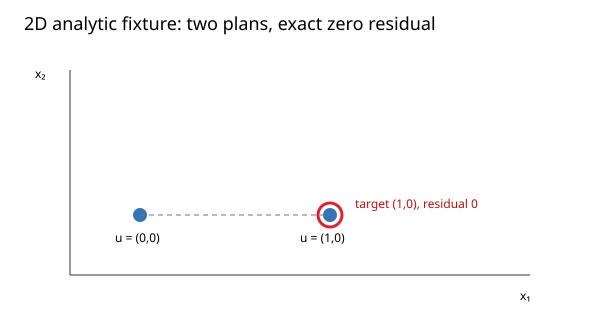

Three fixed fixtures exercise the public validated API. Timings are descriptive for this host and workload; no comparator, speedup, source-mapped limiter, or per-call latency claim is made.
| Fixture | Calls / batch | Median batch (ns) | Range (ns) |
|---|---|---|---|
| analytic_2d | 100 | 435,462 | 418,910–458,161 |
| all_infeasible | 100 | 139,125 | 133,468–142,268 |
| b08_rounded | 1 | 561,272,221 | 554,351,976–563,596,504 |
The 2D analytic case checks 2 plans and 2 disturbance histories per plan and returns the exact bound [0, 0]. The infeasible case checks the one plan is infeasible. The displayed-data B08 case checks 625 plans and 160,000 histories, with bounds [67.15060110132285, 67.15060110146638]. This B08 fixture uses the binary64 values represented by its saved hexadecimal input. It is distinct from the printed-decimal rational audit.

Seven measured batches per fixture after one excluded warmup. The measured interval includes the public call and result/plan-count checks. Release build, GCC 16.2.1, C++20, Linux x86_64; 8 logical CPUs. Load average before capture: 1.31, 1.81, 1.93. Other interactive processes were present. No profiling counters were collected, so the limiting resource is unidentified.
Algorithm source c72f3480c8fea2575ba860890502857006e9b9f4; harness 1c606969b0d15700b61e43effdbbd545e9d0ed73; fixture source SHA-256 d1825fdf25433e6cfde5c6b8a963d5938e5a72d03eeea58217b601adc6691216.
Raw records · Trial table · Reproduction and scope · File hashes